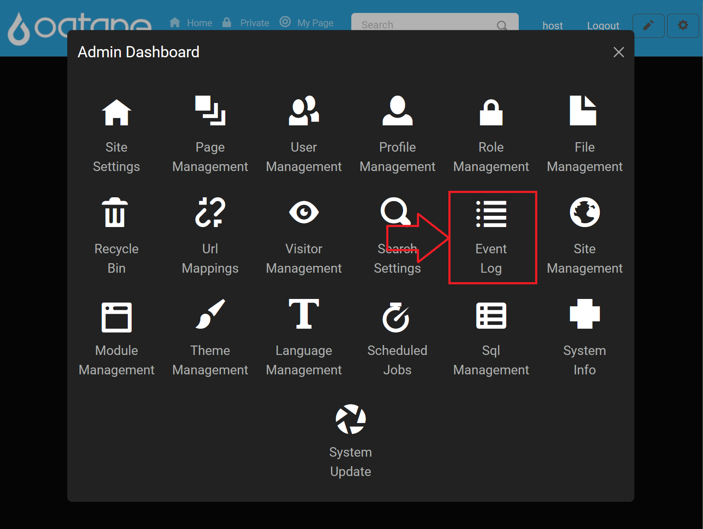
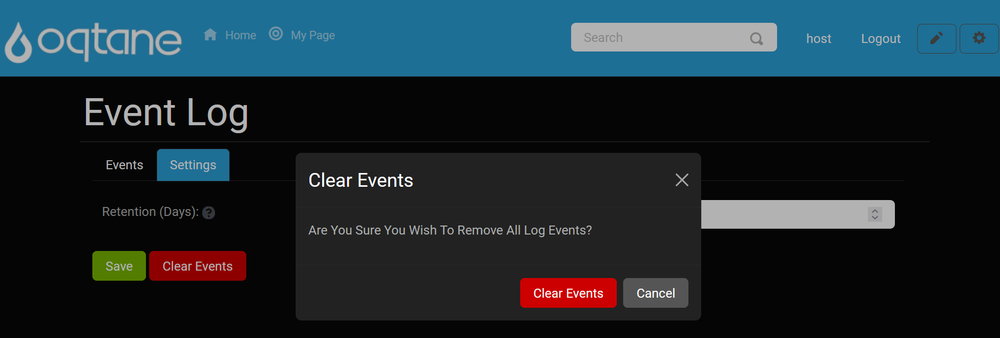

Event Log

Overview
The Event Log provides a centralized record of events occurring on your website, allowing you to monitor site activity and troubleshoot as needed. It is designed to be both simple and effective for viewing and managing events.
Control Panel Walk-through
Accessing the Event Log Feature
Open the Control Panel: Click the control panel icon to access additional settings.

Open the Admin Dashboard: In the control panel, select the Admin Dashboard button.

Select the Event Log: In the Admin Dashboard, click on the Event Log icon to view and configure event logging.

Event Log Features
Upon opening the Event Log, you'll see a list of recent events by default, displayed in pages with 10 entries per page. You can adjust the page size to view more events at a time.
Filtering Events
At the top of the Event Log, three main filters help refine the log view:
Level: Filter events by severity level, including:
- Trace
- Debug
- Information
- Warning
- Error
- Critical
Function: Filter events by action type, which is color-coded for easier tracking:
- Create
- Read
- Update
- Delete
- Security
- Other
Maximum Items: Choose how many rows you would like displayed per page.
For example, to view login attempts only, set Function to Security. For broader viewing, increase Maximum Items to display up to 100 events on a single page.
Event Log Pagination
Use the paging feature at the bottom of the list to navigate between pages if there are more events than can fit in one view.
Viewing Event Details
For a closer look at any event, click the Details button next to it.
This opens a detailed view of the event, including where it occurred and a description of the action.
To exit, click the Cancel button or the X in the top right corner.
Event Log Settings
The Event Log has configurable settings to manage data retention.
Settings
- Retention (days): Specify how many days events should be stored.

After configuring, click Save to apply your settings.
Clearing The Event Log
To clear all events from the log:
Click the Clear Events button in the settings.

Confirm by selecting Clear Events in the confirmation window.

Summary
The Event Log feature enables efficient monitoring of your site's events. Utilize filters, pagination, and detail views to gain insights, troubleshoot issues, and keep your site secure. Configure settings as needed for optimal event data retention and manage the log by clearing old events when necessary.